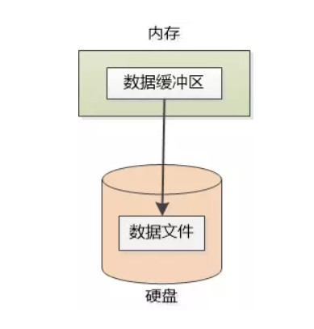
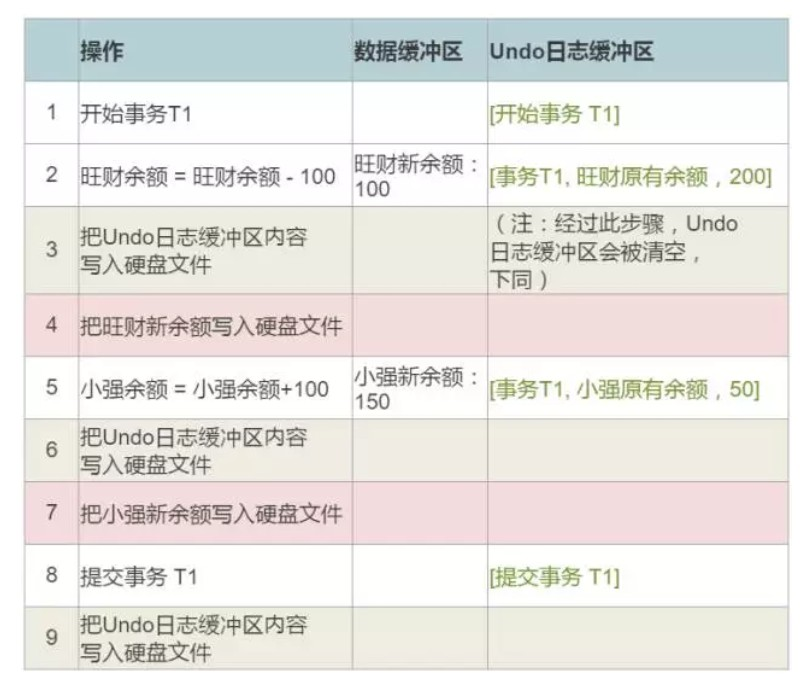
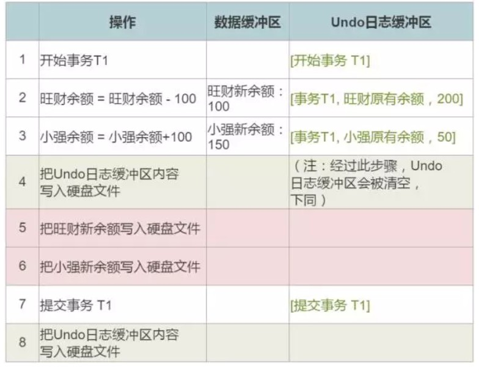

数据库看似简单，却是个十分复杂的东西
概述
ACID： 指数据库事务正确执行的四个基本要素的缩写。包含：原子性（Atomicity）、一致性（Consistency）、隔离性（Isolation）、持久性（Durability）。一个支持事务（Transaction）的数据库，必需要具有这四种特性，否则在事务过程（Transaction processing）当中无法保证数据的正确性，交易过程极可能达不到交易方的要求。
如果没有没有正确执行便会出现以下问题：
1，脏读（dirtyRead）
脏读是指的一个事物正在访问数据，并且对数据进行了修改，而且这种修改还没有提交到数据库中，这时，另一个事物也访问这个数据
，然后使用了这个数据。因为这个数据还没有提交数据，那么另外一个事物读到的这个数据就是脏数据。
2，不可重复读
不可重复读，就是在同一事务中，两次读取同一数据（同一主键），得到内容不同。不可重复读和脏读的区别是，不可重复读读取到的都是已经提交的数据，而不是脏数据。
3，虚读(幻读)
幻读指的是，同一事务中，用同样的操作读取两次，得到的记录数不相同。幻读和不可重复读都是读取到了另一条已经提交的事物，这一点和脏读不同。
看似幻读和不可重复读都是一样的，但是区别在于不可重复读针对的是同一个主键的数据。而幻读针对的是一批数据两次读取中，有新增或者减少。
原子性
了解了数据库的四大特性，那么今天就来讲讲数据库特性之一 —–原子性
首先：原子性一说大家都明白，那你能说说在执行的操作过程中，如果还没做完系统就崩溃了，或者断电了，你怎么办啊？ 你怎么保证原子性？如果我还没做完，系统就崩溃了，那系统重启以后我就得做恢复操作？
下面我们就来讲讲这个问题的答案。
首先以旺财有200块钱， 小强有50 块钱，现在旺财要给小强转账，假设转100块为例。如果按照事务完整进行则会有一下四步：
(1) 开始事务 T1 （假设T1是个事务的内部编号）
(2) 旺财余额 = 旺财余额 -100
(3) 小强余额 = 小强余额 + 100
(4) 提交事务 T1
我们知道所有的计算操作都是在内存中进行的，这个时候被计算的数据首先放入缓冲区中：如下图

因为硬盘的速度太慢，所以不会经常性的操作硬盘，而是把数据放入到缓冲区中，然后一次性保存到硬盘中。
Undo 日志
这里先假定数据缓冲区能和硬盘的数据文件同步。
问题：旺财在给小强转账， 第二步执行完了，旺财的余额变成了100块 （200-100）， 假设已经写入了硬盘文件， 现在断电了， 小强的余额有没有加上，系统的钱白白消失了100块， 数据已经不一致了， 你怎么办？
而这个叫做Undo的日志文件，就是为了解决这个问题的。
分析：
按照上面的情况，会在日志文件中记录下事务开始之前他俩账号余额：
[事务T1, 旺财原有余额 ， 200]
[事务T1, 小强原有余额， 50 ]
如果事务执行到一半，就断电了，那数据库重启以后我就根据undo的日志文件来恢复。
问题：恢复数据的时候， 那你怎么才能知道一个事务没有完成呢？
[开始事务 T1]
[事务T1, 旺财原有余额，200]
[事务T1, 小强原有余额，50]
[提交事务 T1]
Undo日志文件中不仅仅只有余额， 事务的开始和结束也会记录，如果我在日志文件中看到了提交事务 T1, 或者 回滚事务 T1, 我就知道这个事务已经结束，不用再去理会它了， 更不用去恢复。 如果我只看到 开始事务 T1, 而找不到提交或回滚，那我就得恢复。比如下面这个：
[开始事务 T1]
[事务T1, 旺财原有余额，200]
[事务T1, 小强原有余额，50]
如果已经恢复了，就在日志文件中加上一行 回滚事务 T1 ， 这样下一次恢复我就不用再考虑T1这个事务了。
问题：那我们应该什么时候记录Undo日志呢？什么时候把Undo日志写入文件呢？
把日志记录也放到了内存的Undo日志缓冲区，伺机写入硬盘。

我们来看看下面的分析：
- 如果系统在第4步和第5步之间崩溃，旺财的余额写入了硬盘，但是小强的还没写入， 那Undo日志看起来是这样的：
[开始事务 T1]
[事务T1, 旺财原有余额，200]
由于找不到事务结束的日志， 你会进行恢复操作， 把旺财的原有余额给恢复了。
- 如果是在第7步和第8步之间系统崩溃，旺财和小强的最新余额都写入了硬盘，但是没有提交事务， 那Undo日志看起来是这样的：
[开始事务 T1]
[事务T1, 旺财原有余额，200]
[事务T1, 小强原有余额，50]
由于没有事务结束的日志，你也需要进行恢复，把旺财和小强的原有余额恢复成200和50 ”
- 如果是在第8步和第9步之间系统崩溃， 旺财和小强的最新余额都写入了硬盘， 也提交了事务， 但是提交事务的操作没有写入Undo 日志， 所以Undo日志还是这样：
[开始事务 T1]
[事务T1, 旺财原有余额，200]
[事务T1, 小强原有余额，50]
由于没有事务结束的日志，你还得需要进行恢复，把旺财和小强的原有余额恢复成200和50。
总结
其实这里面是有规律的，如果实现了这个规律便可以解决所有的问题：
在你把最新余额写入硬盘之前， 一定要先把相关的Undo日志记录写入硬盘。 例如 [事务T1, 旺财原有余额，200] 一定要在旺财的新余额=100写入硬盘之前写入。
[提交事务 T1] 这样的Undo日志记录一定要在所有的新余额写入硬盘之后再写入。 有了这两条的保证，我就可以高枕无忧了！， 比如说，换个操作次序也没有问题：

end
我所向往的不过是如此简单而已